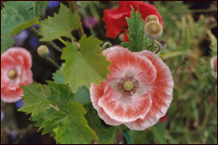
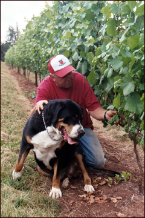
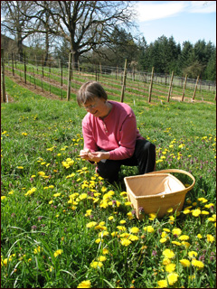

Satori Springs Estate Vineyard … where the sun, the moon and the stars paint with the colors of creation.
“The discovery of a new vineyard does more for the happiness of mankind than the discovery of a new star.” Anthelme Brillat-Savarin (1755-1826)
– French Gastronome
Satori Springs Vineyard (SSV) is located just a short drive East from the Willamette River as it winds its way through Oregon’s “Garden of Eden” south of Oregon City in the Carus community. This northeast Willamette Valley site with Jory clay and Cornelius silt loam soils between the 350’ and 500’ contours features excellent drainage on 8 to 15% slopes primarily facing southwest, west and northwest.
Our initial inspiration to plant a vineyard was rooted in our desire to enhance the economic viability of our family farm. Ideally, the land needed to support itself as well as retain its identity as a place of beauty and refuge for wildlife.
“Having lived on this farm for over 55 years, I feel that it has become a part of me. There were prune orchards here before we came, then my dad grew blackcaps and now we tend vinifera grape vines. With this attachment, there is a desire to express and share something tangible of the goodness found here.”
– Chris Carlberg
After more than a decade of beginning this “great experiment”, we must conclude that a personally planted and cultivated Estate vineyard like Satori Springs has indeed challenged us as winegrowers to look beyond the standard with sensitivity and creativity in every aspect of our management and labor. Along with our healthy respect for farming organically and biodynamically, we hope, above all, to model this definition of “organic” by Wendell Berry, author, The Gift of Good Land:
An organic farm, properly speaking, is not one that uses certain methods and substances and avoids others; it is a farm whose structure is formed in imitation of the structure of a natural system; it has the integrity, the independence, and the benign dependence of an organism. A farm that imports too much fertility, even as feed or manure, is in this sense as inorganic as a farm that exports too much or that imports chemical fertilizer.
Our family and business currently dedicate a percentage of the sale of our wines to supporting the peaceful, humanitarian efforts of these three organizations:
Chris Carlberg views growing vines as a dynamic process, a process of bringing energy into the plants via the soil and leaves and working to balance growth of roots, vegetation and fruit. Much of this work is done simply through careful pruning, plant spacing, canopy management and cover crop selection. However, he also believes in nudging his soils and vines in a positive direction by applying biodynamic preparations made from the manure from his cows and the essence of various indigenous wild plants from around the area.
“I think of these “preparations” as a means to bring about a healthy balance in soil and plant life and to some degree ward off invasive pests and diseases. We do want to influence the vine, but in a benign way, such that it will authentically reflect in its fruit both how and where it has grown. Our wines are from this vineyard, Satori Springs. This is what we have, what we know and what our hands and hearts can touch.”
-C.C.
While its first five acres of vines were planted using self-rooted Dijon 115, Pommard and Wädensvil clone Pinot Noir and two acres of Pinot Gris, SSV has since grown to encompass 15 acres with additional plantings of Dijon 777 and 667 on #3309 rootstock and Pommard on Riperia Gloriae rootstock. The vineyard also includes a half acre of Muscat Cannelli. Our average yields in both, Pinot Noir and Pinot Gris, vary between 1.5 and 2.2 tons per acre, depending on weather conditions during “bloom” and “fruit set” and how well we manage to keep the birds at bay around harvest time when berries are at their sweetest.